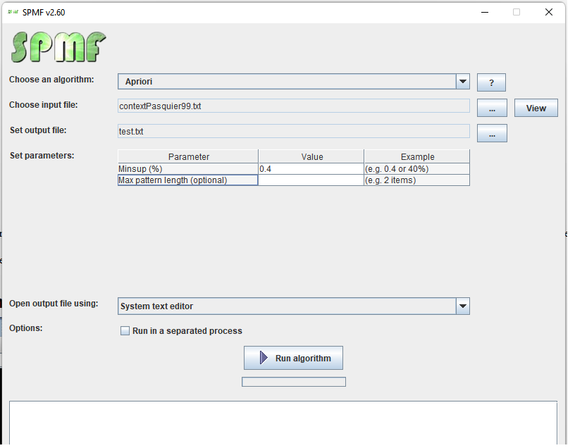
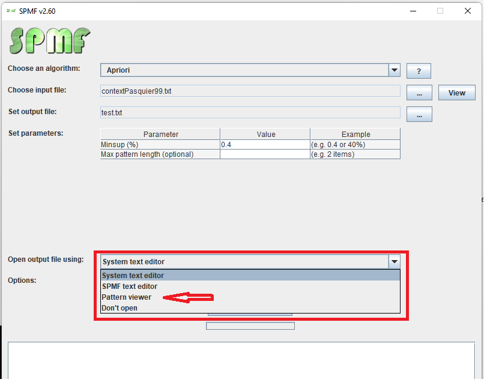
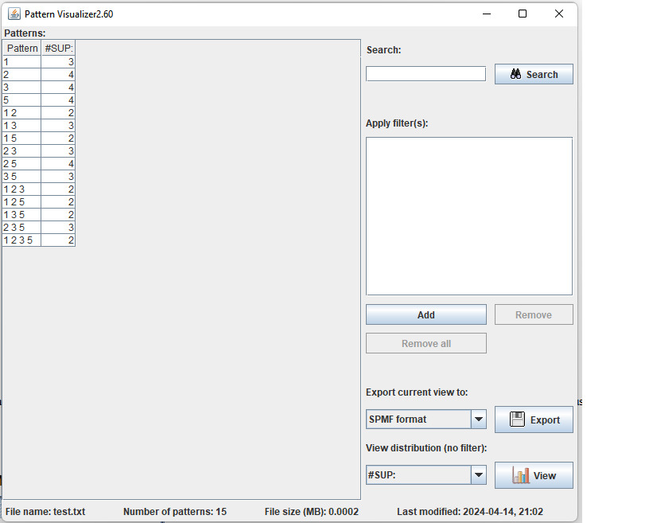
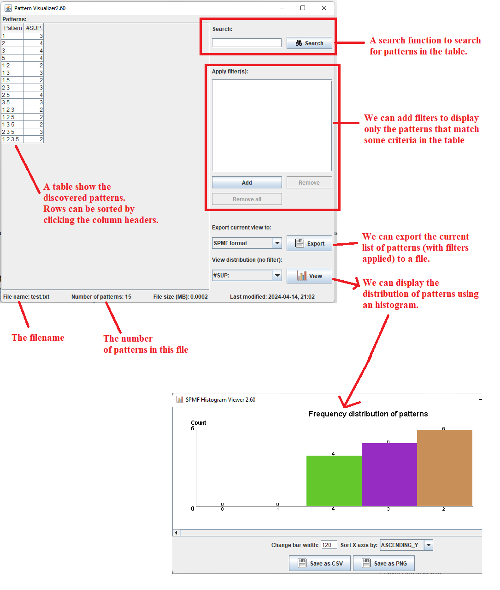
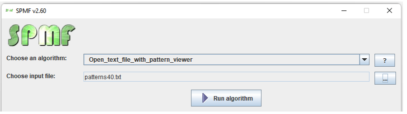
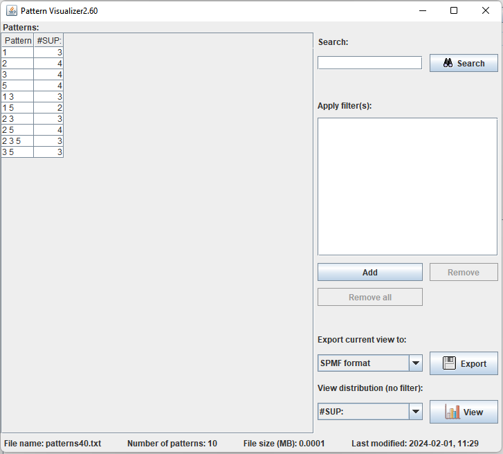

Open an output file containing patterns with the SPMF Pattern Viewer (SPMF documentation)
The SPMF software can be used to run various algorithms that find interesting patterns in data.
These patterns discovered by algorithms are typically saved in an output text file. This text file can be opened with a text editor but also with a tool called the Pattern Viewer, which is provided in the graphical user interface of SPMF.
This tool offers several interesting features for analyzing the patterns found by an algorithm.
This page explain how to use the Pattern Viewer of SPMF.
How to start the Pattern Viewer?
The main windows for running an algorithm in SPMF is shown in the picture below. In that window, we can choose an algorithm (e.g. Apriori), choose an input file (e.g. contextPasquier99.txt), set an output file for saving the results (e.g. test.txt), and set the parameters of the algorithm.
Then, we can click "Run algorithm" to run the selected algorithm.

But also, as shown in the picture below, we can use this window to decide what to do with the output file after the algorithm is run:

Here we have four main options:
- Use the default text editor installed in the operating system to open the output file.
- Use the built-in SPMF text editor to open the output file.
- Use the Pattern Viewer tool of SPMF to open the output file.
- or don't open the output file.
If we choose to open the output file with the pattern viewer tool, the Pattern Viewer window will open when we click the "Run algorithm" button to display the output file produced by the selected algorithm::

This windows show the patterns discovered as a table but also provide multiple useful features. Here is an overview:

The main functions provided by the Pattern Viewer are displayed in the picture above:
- Display patterns: Display the list of patterns as a table.
- Search function: Allows tosearch for patterns containing some string. For example, we could search for all patterns containing "1".
- Filtering function: Allows applying filters to the table such as to display only the patterns containing item "1" but not item "2".
- Exporting function: Allows exporting the current list of patterns in the table (with filters applied) to an output text file.
- Viewing the distribution of patterns: We can view the distribution of patterns as a frequency histogram. We can choose the column according to which we want to view the distribution. In the example above, I chose to display the distribution of patterns in terms of the support (#SUP) column from the table. A frequency histogram is generated, and it is possible to then export this histogram as a PNG file or a CSV file that can be imported in other software (.e.g Excel or OpenOffice Calc).
Running the Pattern Viewer as an algorithm from the graphical user interface
There are also other ways to start the Pattern Viewer of SPMF. In particular, the Pattern Viewer can be called just like any other algorithms offered in SPMF.
For example, lets say that we want to view a file patterns40.txt containing the patterns found by an itemset mining algorithm using the Pattern Viewer.
In the graphical user interface of SPMF, we can (1) select the algorithm "Open_text_file_with_pattern_viewer" and (2) set the input file as patterns40.txt and then (3) click the "Run algorithm" button.

This will open the content of the patterns40.txt file with the Pattern Viewer:

Starting the Pattern Viewer using the command line interface of SPMF
We can also start the Pattern Viewer using the command line interface of SPMF by running the following commands in the command line, in a folder containing spmf.jar and the file patterns40.txt:
java -jar spmf.jar run Open_text_file_with_pattern_viewer patterns40.txt